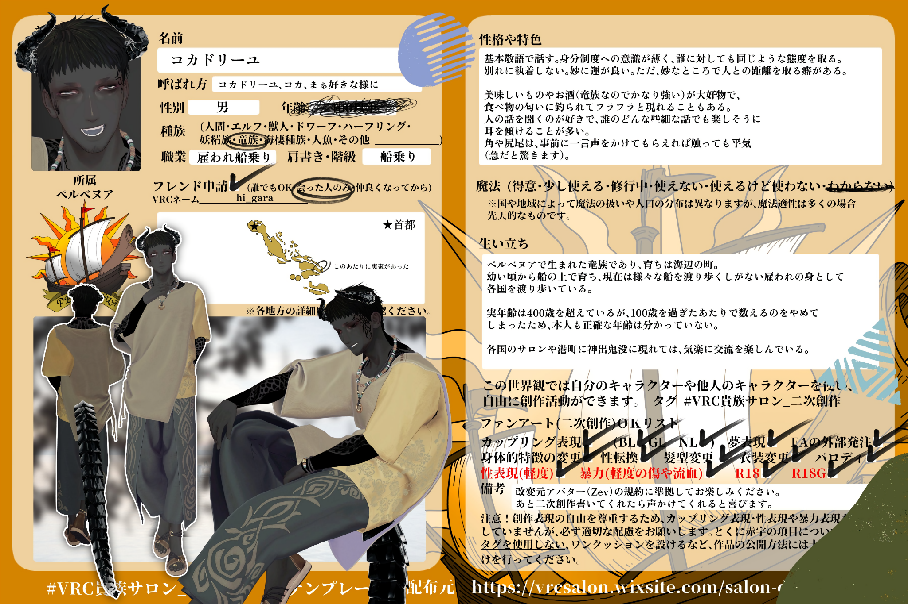

概要
ペルベヌアで生まれた竜族。海辺の町で育ち、幼い頃から船の上で育った。現在は様々な船を渡り歩きながら、各国を旅している雇われの身。
性格・特色
基本敬語で話す。身分制度への意識が薄く、誰に対しても同じような態度を取る。別れに執着しない。妙に運が良い。ただ、妙なところで人との距離を取る癖がある。美味しいものやお酒が大好物で、食べ物の匂いに釣られてフラフラと現れることもある。人の話を聞くのが好きで、誰のどんな些細な話でも楽しそうに耳を傾ける。角や尻尾は、事前に一言声をかけてもらえれば触っても平気。
生い立ち
実年齢は100歳を超えているが、100歳を過ぎたあたりで数えるのをやめてしまったため、本人にも正確な年齢は分かっていない。各国のサロンや港町に神出鬼没に現れては、気楽に交流を楽しんでいる。
二次創作について
この世界観では、自分のキャラクターや他人のキャラクターを使い、自由に創作活動ができます。
- カップリング表現 / BL・GL・NL OK
- 夢表現 OK
- FAの外部発注 OK
- 身体的特徴の変更・性転換・髪型変更・衣装変更・パロディ OK
- 性表現・暴力表現・R18 / R18G CSの記載・規約を確認
改変元アバターの規約や、各キャラクターのCSに記載された注意事項に準拠して楽しんでください。
キャラクターシート
Character Sheet / Original Reference
